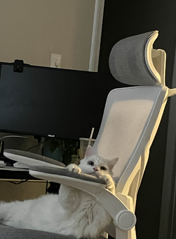

About Me
Hicks, Emerson
I understand that what is on this page is not password protected and I will not put anything here that I don’t want publicly available. - EH 1/14/2025
Emerson Hicks ~ Epic Hamster
Personal Background
I’m from Greensboro, NC.
Professional Background
I have worked as a Software Engineer for three different internships and plan to complete a fourth this summer.
Academic Background
I am a senior completing my Bachelor’s in Computer Science with a concentration in HCI (Human-computer interaction).
Background in This Subject
I have a pretty extensive background in CS given my major and degree credits. I’ve worked in the industry and also have experience running and developing my own software & applications.
Primary Computer Platform
Windows PC and Apple Macbook.
Courses I’m Taking and Why
- STAT 2223 Elements of Stats 2: This course is required for my concentration.
- ITIS 4166 Network based App Development: Needed extra credits and the course sounded interesting to me. I’ve also worked under this professor previously and had a good experience.
- ITCS 4102 Programming Languages: Again I needed more elective credits and the course sounded interesting to me to get a stronger understanding of the history of various programming languages.
- ITSC 1110 Introduction to Computer Science Principles: I signed up for this course as I needed to take electives and thought it would be pretty easy to get through.
- ITCS 3050 IOS Development: This course sounded really interesting to me as I haven’t worked much with Swift or done very much IOS Development.
Funny/Interesting Item about Myself
I can do a backflip.
I'd also like to share
I just want to be done with school!
Photo of My Very Nice Cat